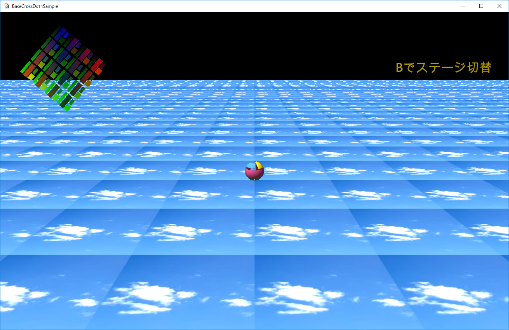

図0021a
１、ステージの切り替え ２、テクスチャのリソース登録 ３、親子関係のスプライト
void Scene::OnCreate() {
CreateResources();
//自分自身にイベントを送る
//これにより各ステージやオブジェクトがCreate時にシーンにアクセスできる
PostEvent(0.0f, GetThis<ObjectInterface>(), GetThis<Scene>(), L"ToGameStage");
}
void Scene::OnEvent(const shared_ptr<Event>& event) {
if (event->m_MsgStr == L"ToGameStage") {
//アクティブステージをGameStageに設定
ResetActiveStage<GameStage>();
}
else if (event->m_MsgStr == L"ToEmptyStage") {
//アクティブステージをEmptyStageに設定
ResetActiveStage<EmptyStage>();
}
}
void GameStage::OnCreate() {
//平面の作成
Quat Qt;
Qt.rotationX(XM_PIDIV2);
AddGameObject<SquareObject>(
L"SKY_TX",
Vec3(50.0f, 50.0f, 1.0f),
Qt,
Vec3(0.0f, 0.0f, 0.0f)
);
//プレイヤーの作成
AddGameObject<Player>(
18,
L"TRACE_TX",
true,
Vec3(0.0f, 0.125f, 0.0f)
);
//PNT描画オブジェクトの作成
AddGameObject<PNTDrawObject>();
//中略
}
AddGameObjectテンプレート関数
void GameStage::OnUpdateStage() {
for (auto& v : GetGameObjectVec()) {
//各オブジェクトの更新
v->OnUpdate();
}
//自分自身の更新
this->OnUpdate();
}
void GameStage::OnDrawStage() {
//描画デバイスの取得
auto Dev = App::GetApp()->GetDeviceResources();
Dev->ClearDefaultViews(Col4(0, 0, 0, 1.0f));
//デフォルト描画の開始
Dev->StartDefaultDraw();
for (auto& v : GetGameObjectVec()) {
//各オブジェクトの描画
v->OnDraw();
}
//自分自身の描画
this->OnDraw();
//デフォルト描画の終了
Dev->EndDefaultDraw();
}
void GameStage::OnUpdate() {
//コントローラの取得
auto CntlVec = App::GetApp()->GetInputDevice().GetControlerVec();
if (CntlVec[0].bConnected) {
//中略
//Bボタン
if (CntlVec[0].wPressedButtons & XINPUT_GAMEPAD_B) {
PostEvent(0.0f, GetThis<ObjectInterface>(),
App::GetApp()->GetScene<Scene>(), L"ToEmptyStage");
}
}
}
void Scene::CreateResources() {
wstring DataDir;
//サンプルのためアセットディレクトリを取得
App::GetApp()->GetAssetsDirectory(DataDir);
//各ゲームは以下のようにデータディレクトリを取得すべき
//App::GetApp()->GetDataDirectory(DataDir);
wstring strTexture = DataDir + L"sky.jpg";
App::GetApp()->RegisterTexture(L"SKY_TX", strTexture);
strTexture = DataDir + L"trace.png";
App::GetApp()->RegisterTexture(L"TRACE_TX", strTexture);
strTexture = DataDir + L"StageMessage.png";
App::GetApp()->RegisterTexture(L"MESSAGE_TX", strTexture);
}
１、PCT頂点を作成する機能（共通） ２、描画機能（共通） ３、頂点を変更する機能（個別） ４、テクスチャを動的に変更できる機能（個別） ５、エミッシブ色を変更できる機能（個別） ６、ブレンドステートを変更できる機能（個別）
void SpriteBase::OnCreate() {
float HelfSize = 0.5f;
//頂点配列(縦横指定数ずつ表示)
m_BackupVertices = {
{ VertexPositionColorTexture(Vec3(-HelfSize, HelfSize, 0),
Col4(1.0f,1.0f,1.0f,1.0f), Vec2(0.0f, 0.0f)) },
{ VertexPositionColorTexture(Vec3(HelfSize, HelfSize, 0),
Col4(1.0f,1.0f,1.0f,1.0f), Vec2((float)m_XWrap, 0.0f)) },
{ VertexPositionColorTexture(Vec3(-HelfSize, -HelfSize, 0),
Col4(1.0f,1.0f,1.0f,1.0f), Vec2(0.0f, (float)m_YWrap)) },
{ VertexPositionColorTexture(Vec3(HelfSize, -HelfSize, 0),
Col4(1.0f,1.0f,1.0f,1.0f), Vec2((float)m_XWrap, (float)m_YWrap)) },
};
//頂点の初期修正（仮想関数呼びだし）
AdjustVertex();
//インデックス配列
vector<uint16_t> indices = { 0, 1, 2, 1, 3, 2 };
//メッシュの作成（変更できる）
m_SquareMesh
= MeshResource::CreateMeshResource(m_BackupVertices, indices, true);
}
void RotateSprite::AdjustVertex() {
//頂点色を変更する
for (size_t i = 0; i < m_BackupVertices.size();i++) {
switch (i) {
case 0:
m_BackupVertices[i].color = Col4(1.0f, 0.0f, 0.0f, 1.0f);
break;
case 1:
m_BackupVertices[i].color = Col4(0.0f, 1.0f, 0.0f, 1.0f);
break;
case 2:
m_BackupVertices[i].color = Col4(0.0f, 0.0f, 1.0f, 1.0f);
break;
case 3:
m_BackupVertices[i].color = Col4(1.0f, 1.0f, 0, 1.0);
break;
}
}
}
void MessageSprite::UpdateVertex(float ElapsedTime,
VertexPositionColorTexture* vertices) {
m_TotalTime += (ElapsedTime * 5.0f);
if (m_TotalTime >= XM_2PI) {
m_TotalTime = 0;
}
float sin_val = sin(m_TotalTime) * 0.5f + 0.5f;
Col4 UpdateCol(1.0f, 1.0f, 1.0f, sin_val);
for (size_t i = 0; i < m_SquareMesh->GetNumVertices(); i++) {
vertices[i] = VertexPositionColorTexture(
m_BackupVertices[i].position,
UpdateCol,
m_BackupVertices[i].textureCoordinate
);
}
}